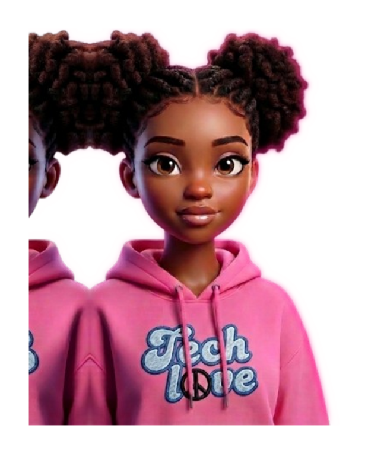
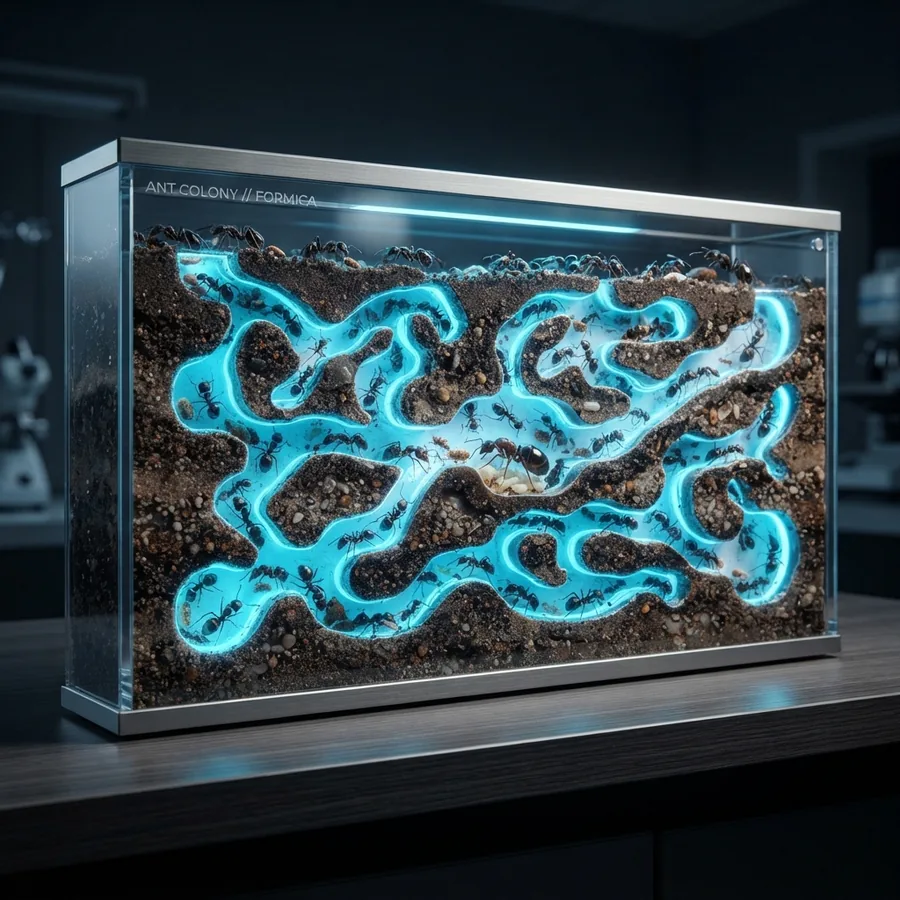

Who I Am
Software developer building full-stack products and robust backend systems — APIs, services and data flows engineered in Go.

systems & full-stack developer
“Fueled by caffeine & curiosity”
02 // tech stack & projects
High-performance algorithms, graph simulations and intelligent business tooling — built from first principles.

graph_theory // edmonds-karp ants travelling: 0 · flow: 2primary project go + bfs engine
An optimized ant-colony pathfinding engine and interactive graph simulation tool built in Go using graph theory, BFS, and the Edmonds-Karp max-flow algorithm, with real-time HTML5 Canvas animation.
secondary project ai + cloud
An AI-powered business OS helping African SMEs run smarter, faster, and more profitably.
mali-mnyapola.netlify.app ↗also shipping
Consuming REST APIs to map bands, albums and concert dates.
A roulette wheel that picks your next meal from what’s in the pantry.
Micro-app that fires a fresh developer joke on every tap.
03 // narrative & foundations
A tuition-free apprenticeship, a business-IT foundation, and an obsession with backend architecture.
coding apprenticeship
Learned software engineering through a tuition-free, peer-to-peer apprenticeship: no lectures, no instructors — just projects, code reviews and pushing each other until the logic holds. Algorithmic thinking, data structures and systems built from scratch.
go · rust · c · algorithmsacademic roots
Studied Business IT at KCA University, where business process modelling, databases and information systems met real software delivery — the bridge between how companies run and how engineers build.
sql · networking · info systemscurrent focus
Today the craft is backend architecture: concurrency, clean service boundaries, and Go all the way down — shipping systems that stay fast and predictable under load.
goroutines · channels · apis04 // peer & senior reviews
Feedback from seniors, evaluators and peers on execution, problem-solving and leadership.
“Mayan’s work on the lem-in pathfinding simulation was mind-blowing. She broke the Edmonds-Karp max-flow algorithm into clean, testable Go routines and kept the memory profile remarkably lightweight.”
“Whenever our cohort hit an esoteric concurrency bug or a pointer conundrum in C or Go, Mayan was the peer everyone gathered around. She explains complex CS abstractions with warmth, clarity and infectious enthusiasm.”
“Building Mali alongside Mayan showed her dual superpower: rock-solid backend services and interfaces that feel intuitive and alive. She sets the pace for the squad — deadlines move because she moves.”
05 // let’s build something
Need a developer who ships fast, thinks in systems and never blinks at a hard problem? I’m one message away.
base Kisumu, Kenya 🇰🇪 — open to remote worldwide
commits, articles and professional network
“Coffee’s on me, ideas on you” Say hi 👋